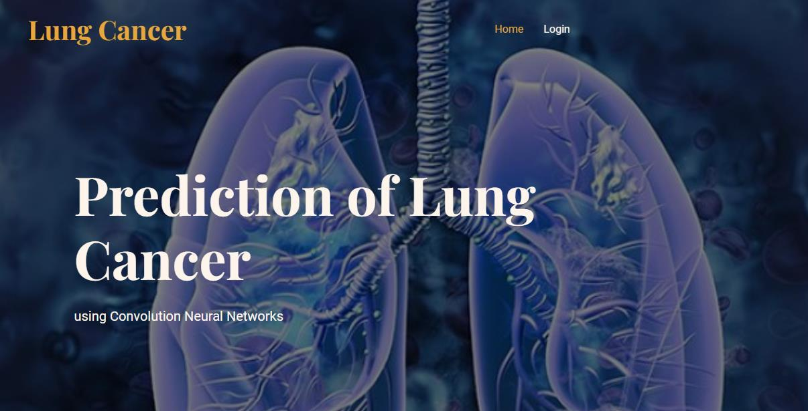
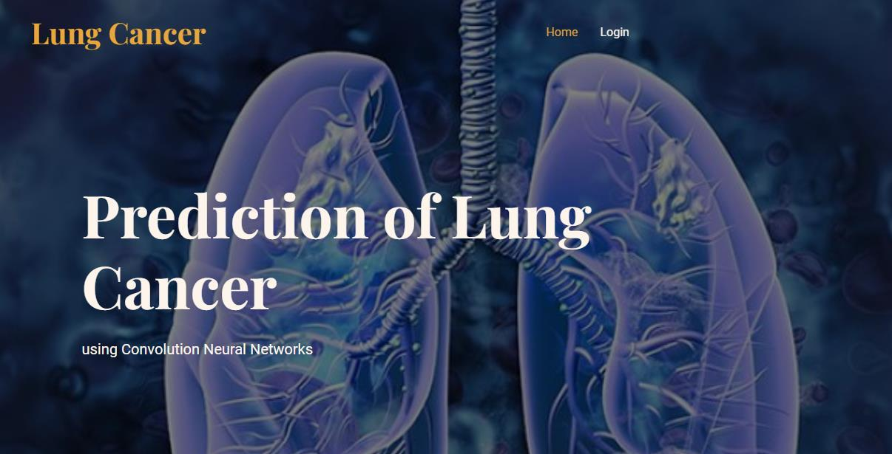
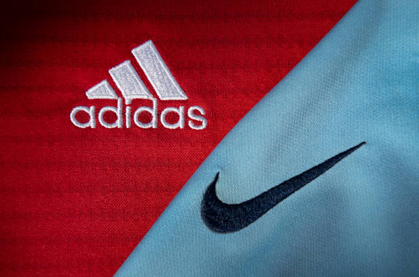
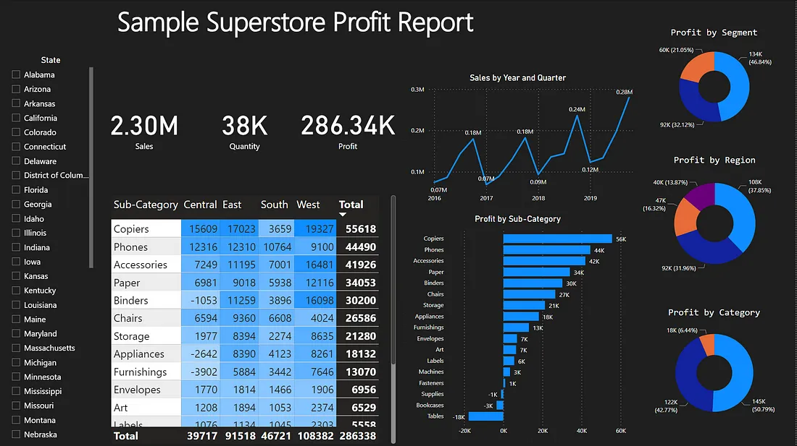

This project aims to develop a predictive model for lung cancer using machine learning techniques. By analyzing medical data and patient histories, the model helps in identifying potential lung cancer cases, thereby aiding early diagnosis and improving patient outcomes.

This project aims showcase analysis of online sports companies like nike and adidas using SQL
This is DL model is built on multiple layers to recognize emotion from audio sounds
With the vast amount of music available on Spotify, analyzing song features can provide insights into trends, genres, and user preferences. This project aims to analyze Spotify songs using various data attributes such as tempo, energy, danceability, and more to uncover patterns and trends in music consumption and production.
Heart disease is one of the leading causes of death worldwide, and early prediction of heart attacks can significantly improve patient outcomes. This project aims to develop a predictive model to identify the likelihood of heart attacks using patient data. By leveraging machine learning algorithms, we can provide a tool that aids in the early detection and prevention of heart attacks.
This project aims to analyze global terrorism data to uncover patterns, trends, and insights that can contribute to a better understanding of terrorist activities worldwide by powerbi.

This project analyzes sales data from a sample superstore to extract insights and make data-driven decisions to improve business operations..

This project involves analyzing a healthcare dataset to extract valuable insights and trends. The dataset contains information about patients, their medical conditions, treatments, and hospital stays.